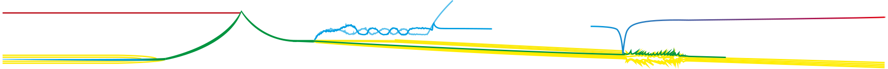
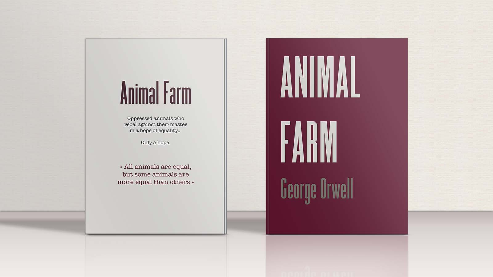

Ce leporello est une revisite illustrée du célèbre roman satirique La ferme des animaux de George Orwell. L'histoire est découpée en 10 titres et 10 scènes, froides et impitoyablement cycliques.

Première étape: abstraction de l'histoire en 10 scènes. Chacune d'entre elles est un moment clé pour comprendre les enjeux de ce roman.
Ce roman est plein de scènes de joie et de souffrance, de tristesse et de peur, de révolution et de soumission. Mais malgré tout cela, tous les efforts des personnages, la situation finale est en tous points identique au début du roman. L'édition choisie est donc un loporello, qui retransmet l'idée d'un cycle dont on ne peut sortir.La couverture est simple, seulement à base de typographie (Commune Nuit Debout, de Velvetyne). Solide, géométrique, haute et étroite, elle présage le thème froid et dur de l'histoire.
